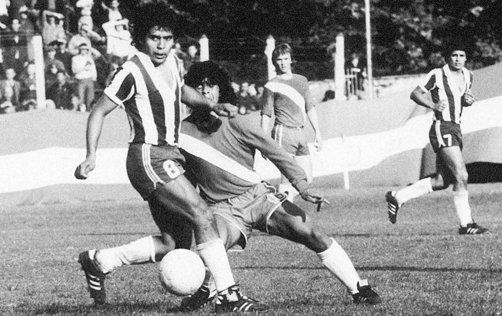

HISTORIAL DE CLUBES
Inicios en Argentinos Juniors (1976-1980)

El debut de Maradona con Argentinos Juniors ya generaba alta expectativa en el club, aunque tuvo que ser retrasado, debido a que tuvo que pagar una suspensión de cinco fechas por una expulsión en un partido ante Vélez por la séptima categoría de juveniles. "Yo tengo la costumbre de hablar demasiado en la cancha..." [continúa el contenido]
Consolidación y exclusión del Mundial 78
En 1977 Maradona ya se consolidó en la alineación titular del equipo, e hizo una gran temporada para Argentinos... [continúa el contenido]